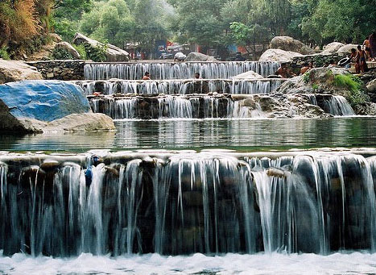
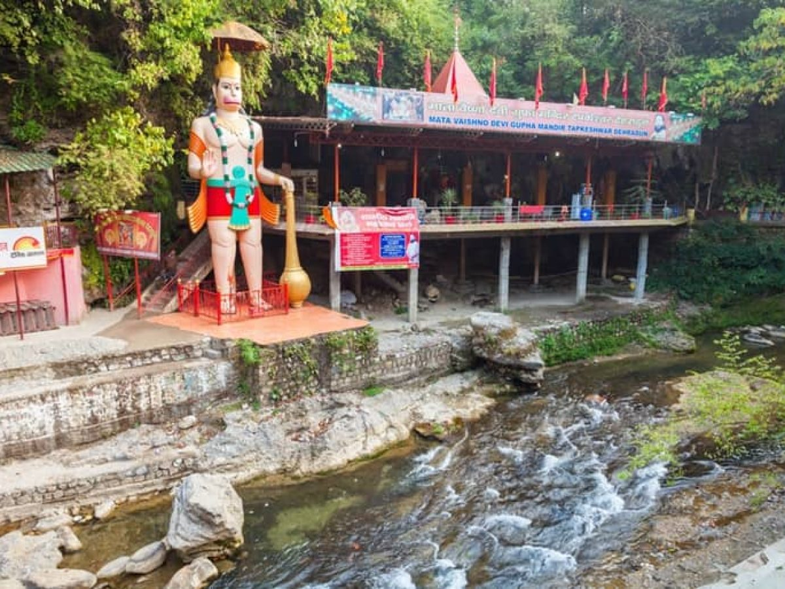

TOURISM IN DEHRADUN
The perfect blend of nature and art in Uttarakhand's capital city, Dehradun, makes it a must-see destination. Our Travel Guide to Know Best Places to Visit in Dehradun, Top Tourist Places in Dehradun, Top Attractions in Dehradun, Sightseeing in Dehradun. Religious sites, natural beauty, the possibility to see modern art, and natural ecosystems are all prominent tourist attractions in this area. There are many things to do here, the most popular of which is a sightseeing tour. Dehradun is close to Rajaji National Park, one of India's largest national parks, and is hence ideal for a wildlife tour.
This city in Uttarakhand, which is dotted with temples such as Tapkeshwar, Daat Kali, and Santa Devi Temple, offers a pilgrimage tour to seek the blessings of the benevolent one. Devotees can also pray at the Buddha Temple in the Clement Town neighbourhood, which is a famous magnificent Buddhist monument and holy school of Tibetan culture. This monastery is also noted for having the world's largest relique. It is one of the places you would not want to miss out on while your vacation since it is visited by thousands of people, both Indians and foreigners.
The Gucchu Paani (Robber's Cave) and Sahastradhara Falls are also worth seeing for their natural beauty. The enchanting splendour of Malsi Deer Park, Lachhiwala, and the Forest Research Institute contributes to the city’s natural allure. Feel little in front of the sky-touching Clock Tower, and don't forget to shop in Dehradun's local market (Tibetan Market).
Most Famous Tourist Places in Dehradun
Dehradun boasts a sophisticated Regional Science Centre that is an excellent source of entertainment for children visiting this region with their families but doesn't become so absorbed in it that you lose out on the events of the sprawling Parade Ground.
1. Sahasttradhara
Sahastradhara, which literaly means 'Thousand fold spring' is a famous tourist spot in Dehradun. At the Baldi river, Sahastradhara is located at 14 km from Dehradun city. Tourist visit Sahastradhara in large numbers to watch beauty of waterfalls and caves.

2. Robbers Cave
Robbers Cave is a favourite picnic spot for young couples and fun loving enthusiasts. Located near Anarwala village at 8 kms from Dehradun city center. Visitors often visit Robbers Cave for enjoying cold streams of water within natural beauty of caves.

3. Tapkeshwar Mahadev Temple
Tapkeshwar is a famous holy temple of Lord Shiva on the bank of seasonal Asan river near Dehradun. Known to have one of the oldest Shivling in the cave, Tapkeshwar Mahadev Temple is located at 6.5 km from Dehradun city. As water droplets continuously drops on the shivling, hence it was named as 'Tapkeshwar'.
